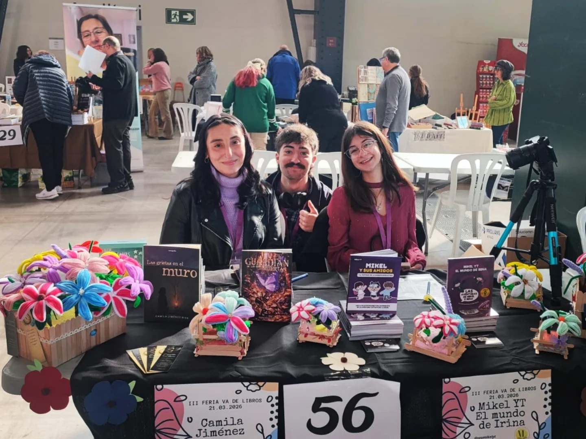
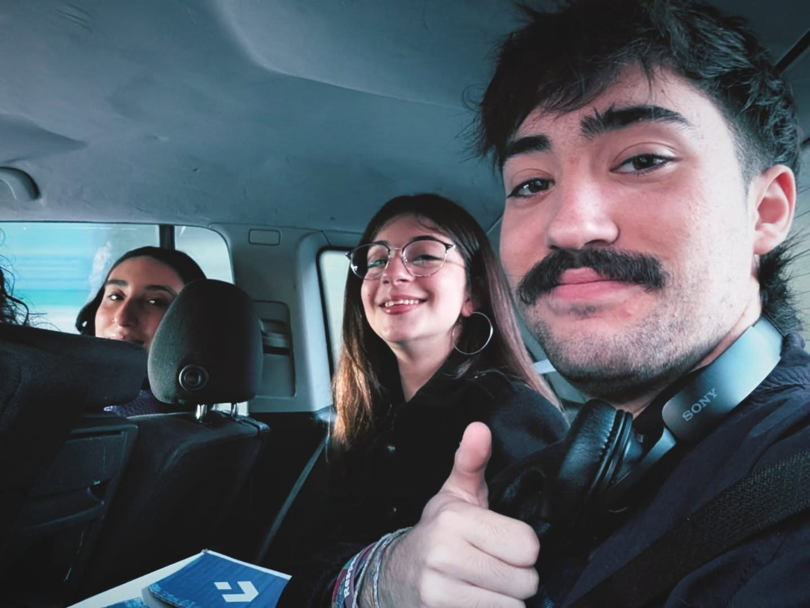
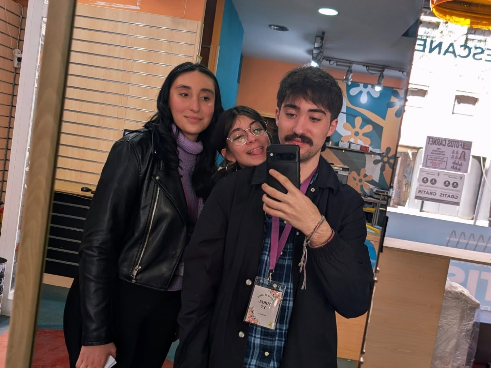

Va de Libros
Va de Libros 2026
Mikel e Irina en la feria del libro Va de Libros 2026 en Sabadell, Barcelona.
El puesto, las compras previas, la entrevista y las fotos del evento quedan reunidas aquí para verlo todo de un vistazo. Muchas gracias a la Asociación Entre Libros y Letras por la oportunidad.
- 21 de marzo de 2026Fecha
- 10:00 a 20:00Horario
- Sabadell, BarcelonaLugar
- Entrada gratuitaAcceso
Vlog preparando el puesto
Mikel e Irina, junto a Camila Jimenez Rios, fueron a comprar juntos para preparar el puesto de la feria.
Fotos del evento



Entrevista con Júlia
Júlia, creadora de contenido en catalán, entrevistó a Mikel e Irina para dar a conocer su proyecto en redes.